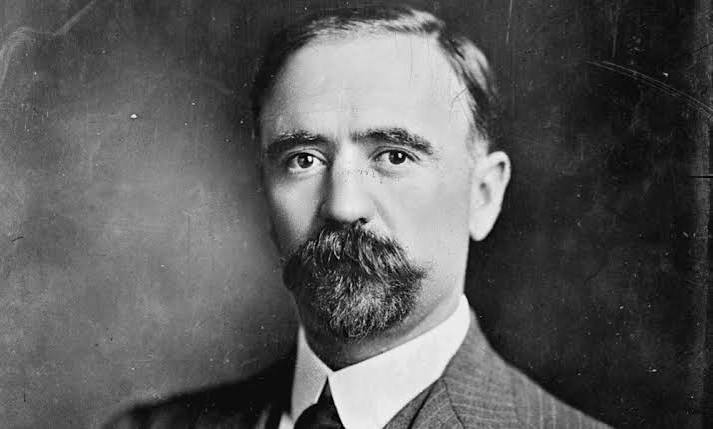

Personajes principales

Porfirio Díaz
Presidente de México durante el Porfiriato. Su gobierno impulsó el crecimiento económico, aunque también generó desigualdad y falta de democracia.

Francisco I. Madero
Líder opositor al gobierno de Díaz y promotor del movimiento revolucionario de 1910.

Ricardo Flores Magón
Periodista y opositor al Porfiriato que defendió ideas de justicia social y cambios políticos.